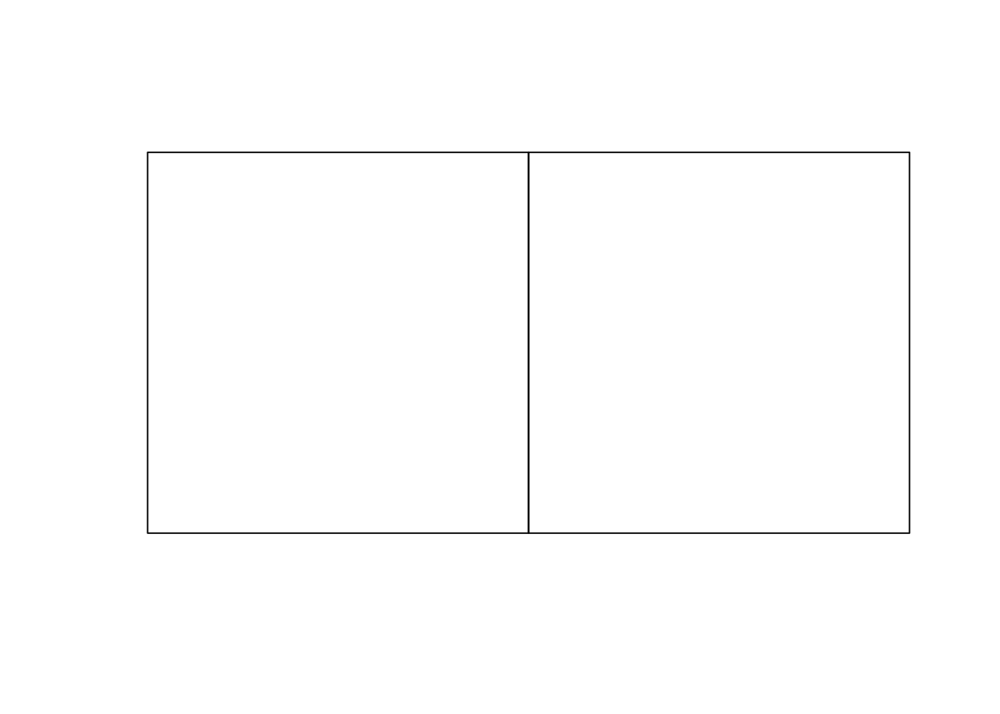

knitr::opts_chunk$set(error = TRUE, message = TRUE)You can handle sf objects at a low level but it can take a bit of getting used to, and you have to watch out for floating point gotchas.
Packages
Everything here needs just sf and dplyr.
library(sf)
library(dplyr)Making polygons
My main confusion dealing with polygons in sf sounds dumb, but was easily fixed. Matrices in R get populated by column, by default, where the points in a polygon are in the rows of the matrix (as they would be in a dataframe with x and y attributes). You just have to make sure to populate the matrices in the right order.
There’s also the slightly strange fact that you have to wrap a matrix of points in a list to make a polygon.
So because of the row-column thing, there’s a tendency to do
mat <- matrix(c(0, 0,
1, 0,
1, 1,
0, 1,
0, 0), nrow = 5, ncol = 2)
square <- st_polygon(list(mat))Error in MtrxSet(x, dim, type = "POLYGON", needClosed = TRUE): polygons not (all) closedBut that fails, because the matrix we made was
mat [,1] [,2]
[1,] 0 1
[2,] 0 0
[3,] 1 1
[4,] 0 0
[5,] 1 0and the first and last rows don’t match (even if they did, it’s not actually a polygon!).
But specify that the matrix should be populated byrow and all is well
square <- st_polygon(list(matrix(c(0, 0,
1, 0,
1, 1,
0, 1,
0, 0), nrow = 5, ncol = 2, byrow = TRUE)))
plot(square)
If you happen to have vectors of the x and y coordinates, then it’s easier.
x <- c(0, 1, 1, 0, 0)
y <- c(0, 0, 1, 1, 0)
square <- st_polygon(list(matrix(c(x, y), nrow = 5, ncol = 2)))
plot(square)
Floating point coordinates and their discontents
sf defaults to using floating point calculations which has some annoying side-effects. For example, the code below results in an error
angles <- 0:3 * 2 * pi / 3
x <- cos(angles)
y <- sin(angles)
triangle <- st_polygon(list(matrix(c(x, y), nrow = 7, ncol = 2)))Error in MtrxSet(x, dim, type = "POLYGON", needClosed = TRUE): polygons not (all) closedBecause sf defaults to floating point it doesn’t consider the polygon closed due to precision issues that mean R considers sin(0) != sin(2 * pi):
sin(0) == sin(2 * pi)[1] FALSEThere is no easy way to fix this except to round the coordinates!
x <- round(x, 6)
y <- round(y, 6)
triangle <- st_polygon(list(matrix(c(x, y), nrow = 4, ncol = 2)))
plot(triangle)
There’s not a lot you can do about this when you are constructing sf objects. Polygons must be closed, and equality is strictly applied to the opening and closing points. You can’t ask st_polygon to automatically close polygons for you.
Once you have polygons to work with, the problem can come back to bite you, but there is a way around it. For example, this works OK:
square %>%
st_difference(triangle) %>%
plot()
But let’s make two squares that are theoretically adjacent to one another, but happen to have non-integer coordinates (which… is pretty commonplace!)
angles <- seq(1, 7, 2) * 2 * pi / 8
angles <- c(angles, angles[1])
x1 <- cos(angles)
y1 <- sin(angles)
s1 <- st_polygon(list(matrix(c(x1, y1), nrow = 5, ncol = 2)))
bb <- st_bbox(s1)
s2 <- s1 + c(bb$xmax - bb$xmin, 0)
plot(s1, xlim = c(-1, 2.1))
plot(s2, add = TRUE)
Two squares, next to one another as we might hope, but if, for example, we st_union them we get a MULTIPOLYGON.
s3 <- st_union(s1, s2)
s3MULTIPOLYGON (((0.7071068 0.7071068, -0.7071068 0.7071068, -0.7071068 -0.7071068, 0.7071068 -0.7071068, 0.7071068 0.7071068)), ((2.12132 0.7071068, 0.7071068 0.7071068, 0.7071068 -0.7071068, 2.12132 -0.7071068, 2.12132 0.7071068)))If we plot them, they still appear separate
plot(s3)
and if we measure the distance between them, turns out they don’t touch at all, but are in fact a miniscule distance apart…
s1 %>% st_distance(s2) [,1]
[1,] 3.330669e-16It’s probably not necessary to point out how silly this is, even if it is strictly correct.
RXKCD::getXKCD(2170)$imgError in loadNamespace(x): there is no package called 'RXKCD'Specifying precision for spatial operations
By contrast if we use rgeos functions the equivalent union operation works as we might expect (although we do have to feed rgeos the old sp types of polygon, which we can do via a call to as("Spatial")…)
rgeos::gUnion(as(s1, "Spatial"), as(s2, "Spatial")) %>%
st_as_sfc() %>%
plot()Error in loadNamespace(x): there is no package called 'rgeos'sf does allow us to effectively emulate the rgeos behaviour, albeit not for simple geometries. When we instead bundle geometries up into feature collections, we can assign them a precision, and this will take care of the kinds of problems we see above:
s1_sfc <- s1 %>%
st_sfc() %>%
st_set_precision(1e8)
s2_sfc <- s2 %>%
st_sfc() %>%
st_set_precision(1e8)
s1_sfc %>%
st_union(s2_sfc) %>%
plot()
The first time I looked this up in help, I got it wrong due to careless reading, and, I think, assuming that the number you provide to st_set_precision() was a ‘tolerance’, or, in effect a ‘snap distance’. The help is also a bit roundabout, and directs you to this page, for an explanation of how it works.
In effect all coordinates are adjusted by applying a function like this one:
adjust_precision <- function(x, precision) {
round(x * precision) / precision
}
sqrt(2) %>% adjust_precision(1000)[1] 1.414st_snap
Another possible fix for the floating point issue is snapping points to the coordinates of another object before applying operations. So this works, although it is not as clean as the st_precision option. On the other hand, it does work on plain geometry objects, not only on those that have been bundled up into collections.
s1 %>% st_snap(s2, 1e-8) %>%
st_union(s2) %>%
plot()
In conclusion
The tools for making and manipulating geometries at a low level are available in sf but they are not always as simple as you’d like. Of course, most often you are dealing with datasets and that’s where sf comes into its own. Just remember st_set_precision() and you should be able to avoid quite a few headaches…